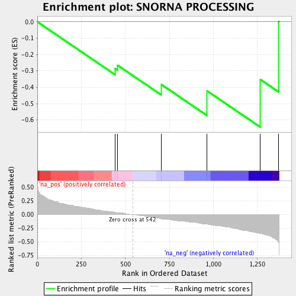

| | | Dataset | ranked_by_GAP.rnk |
| Phenotype | NoPhenotypeAvailable |
| Upregulated in class | na_neg |
| GeneSet | SNORNA PROCESSING |
| Enrichment Score (ES) | -0.6425713 |
| Normalized Enrichment Score (NES) | -1.359869 |
| Nominal p-value | 0.1007874 |
| FDR q-value | 0.37218425 |
| FWER p-Value | 1.0 |
Table: GSEA Results Summary

Fig 1: Enrichment plot: SNORNA PROCESSING
Profile of the Running ES Score & Positions of GeneSet Members on the Rank Ordered List
| PROBE | GENE SYMBOL | GENE_TITLE | RANK IN GENE LIST | RANK METRIC SCORE | RUNNING ES | CORE ENRICHMENT | | 1 | RRP6 | | | 442 | 0.043 | -0.2862 | No |
| 2 | TRF5 | | | 455 | 0.036 | -0.2650 | No |
| 3 | LRP1 | | | 704 | -0.075 | -0.3828 | No |
| 4 | PAP2 | | | 965 | -0.178 | -0.4227 | Yes |
| 5 | XRN1 | | | 1267 | -0.344 | -0.3526 | Yes |
| 6 | RTF1 | | | 1371 | -0.510 | 0.0022 | Yes |
Table: GSEA details [plain text format]
Fig 2: SNORNA PROCESSING: Random ES distribution
Gene set null distribution of ES for SNORNA PROCESSING